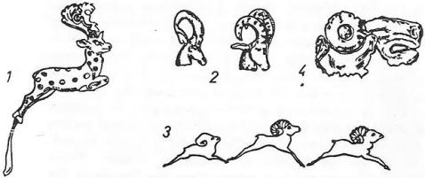
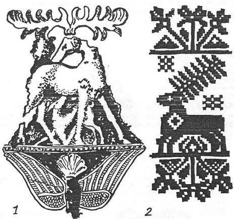
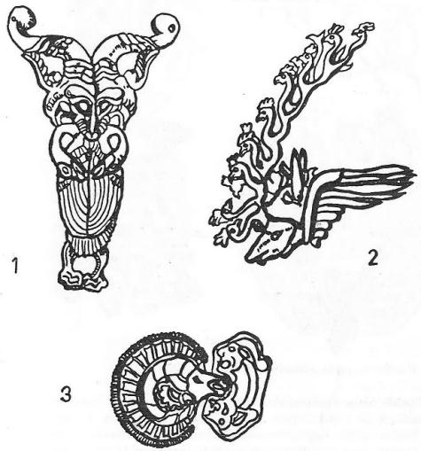
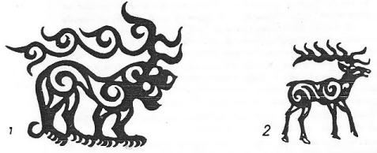
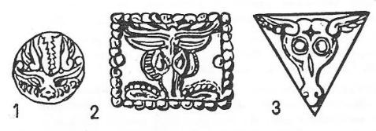
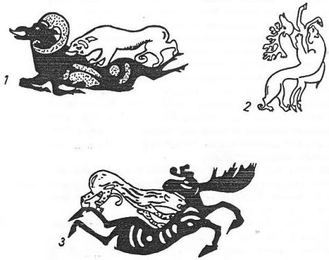
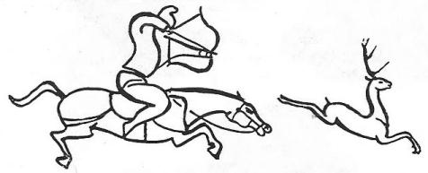

Geyik, Türklerce kutsal bir hayvandır. Türk mitolojisinde ve masallarında yeri çok büyüktür. Bununla beraber Türklere ait eski ve orijinal bir efsanede, Türklerin geyikten türediğine dair bir kayda rastlamıyoruz. Sibirya'nın tundralarında, her şeyin geyikle bittiği bölgelerde, Ren geyiği ile ilgili bazı türeyiş inançlarını bilmiyor değiliz. Fakat bunlar da çok az görülen örneklerdir. Türk efsanelerinde yer tutan daha ziyade dişi Gedik’tir. Bunlar da Tanrı ile ilgisi olan, birer İlâhe, dişi Tanrı ve daha doğrusu birer dişi ruh durumunda idiler. Bu efsanelerin en güzel örneği, Göktürk çağında, Çin kaynakları tarafından anlatılan bir rivayettir. Efsane şöyledir:

Şekil 54: Altay Hun çağı efsanevî geyik figürleri.
"Göktürklerin atalarından biri, sık sık bir mağaraya giderek orada dişi bir Deniz-Tanrısı ile sevişirmiş. İkisi arasındaki bu aşk ilişkisi devam ederken, günün birinde bu Göktürk reisi, bir sürek avı düzenleyerek ordusu ile ava çıkmış. Askerler geniş bölgelerdeki vahşî hayvanları sürerek, nihayet küçük bir yere sıkıştırmışlar. Bundan sonra da avlarının etrafını çevirip, birer birer avlamağa başlamışlar. Tam bu sırada askerlerden biri, karşısına çıkan bir Ak-geyiği okuyla vurarak öldürmüş. Bundan sonra sevgilisini yerinde bulamayan Göktürk reisi, meseleyi anlamış ve bu Ak- geyiği vuran askerle onun kabilesini cezalandırmış. Bu cezaya göre Göktürklerde insan kurbanları, hep bu askerin kabilesinden verilirmiş."1168
Bu efsane Türklerin çok eski, belki de tarihten önceki âdetlerinin bir yankısıdır. Çünkü Göktürk çağı ile ilgili hiç bir kaynak, Göktürklerde insan kurbanı verildiğine dair en ufak bir açıklamada bulunmamaktadırlar. Zaten bu efsaneyi yazan Çin kaynağı da söze başlarken, bu efsanenin, Göktürklerin dedeleri ile ilgili bir söylenti olduğunu yazmaktan kendini alamaz. Az sonra Çingiz-Han'ın ataları ile ilgili efsaneyi de inceleyeceğiz. Çingiz-Han'ın ilk atası olan "Gök-Kurt" ile karısı "Kızıl veya kızılımsı geyik", bir denizi geçerek gelmişlerdi. Aslen gökte doğmuşlardı. Fakat denizle de ilgileri vardı. Bu eski Göktürk efsanesinde kurdun yerini insan, yani Göktürklerin ataları almışlardır. Göktürk Hakanının sevgilisi de, Deniz-ilahesi olan bir dişi geyiktir. Denizi geçmese bile, denizden çıkmış olarak karaya gelmekteydi. Nasıl Hindistan'da beyaz fil kutsal ise, öyle anlaşılıyor ki Türklerde de beyaz geyikler kutsal idiler. Orta Asya’da da beyaz geyikler vardı. Meselâ Kitan kabilelerinin Çin İmparatoruna sundukları hediyeler arasında beyaz geyikler de görülüyordu. Bu konu ile Proto-Moğollarla Kitanların mitolojisini incelerken tekrar ilgileneceğiz. Kitanların erkek ataları da daima beyaz bir at üzerine biniyordu. "Ak"lık, yani beyazlık Altay Şamanizm’inde de ilâhelere mahsus bir renk olarak görülür. Aslında ak sözünün anlamı, temizlik, paklık manasına kullanılırdı. Fakat bu söz hayvan için kullanıldığında ise, durum değişmekte ve renk anlamını almakta idi.
"Ak" renkli "Deniz-ÎIâheleri":
"Deniz-Îlâhesi" Türk mitolojisi içinde yabancı bir Tanrı değildir. Altay Türklerinin yaratılış destanlarını incelerken, Verbitskiy'in topladığı efsanede bir "Ak-Ene," yani Ak-Ana görmekteyiz. Tanrı Ülgen dünyayı yaratmağı düşünürken, su içinden birdenbire Ak-Ana görünüyor ve Ülgen'e akıl veriyor. Efsanenin metni, "Ak-Ana'nın buyruğu üzerine Tanrı böyle yaptı", demektedir. Bundan anlaşılıyor ki Ak-Ana, Tanrı Ülgen'den güçlü olmasa bile akıllı ve bilgili idi. Ayrıca Tanrı Ülgen'in kızlarına da "Ak-kızlar" denirdi. Görülüyor ki "Aklık" özelliğini taşıyan başka Türk Deniz-İlâheleri de vardı.

Şekil 55: Yer ve göğün sembolleri olan İç Asya geyikleri.
"Ak" sözü Altay Türkçesinde cennet anlamına gelirdi. Cennette oturan tanrılara da "Aktu," yani "Aklılar", rengi ve ruhu ap ak olan derlerdi. Bunlar, göğün üçüncü katında otururlardı. Aynı katta "Süt-Ak-Köl," yani süt rengi gibi ak olan göl de vardı. İnsanların bütün hayatı ve ruhu bu göle bağlı idi. Bir çocuk doğacağı zaman Tanrı Ülgen oğluna emir verir, o da "Yayuçı" yani, yaratıcılardan birine bu işi havale ederdi. Yaratıcı, bu Süt Ak Göl'den ruh alır ve doğan çocuğa verirdi.1169
Başka Altay söylentilerine göre, "Enem Yayuçı," yani Anam-Yaratıcı göğün beşinci katında oturur ve insan ruhlarının tek hazinesi olan Süt-Ak-Göl'ün işlerine bakardı. Doğacak çocuklar için ruhu gönderen de o idi. Bunun için Altay Türkleri ona bir hükümdarlık unvanı da verirler ve Hanı-Anam Yaratıcı (Kan-Enem-Yayuçı) derlerdi.1170
Yukarıdaki açıklamayı yapmakla beraber, demek istemiyoruz ki Göktürklerin beyaz bir geyik şeklindeki Deniz-ilahesi, tam anlamıyla Altay Türklerinin Kadın-Yaratıcıları ile ilgiliydi. Fakat bu iki inanış arasında motif benzerlikleri vardır. Bir defa her iki söylentide de deniz veya göl vardır. Ayrıca bu denizin sahibi olan birer ilâhe karşımızdadır. Bundan başka "Aklık" gibi her ikisinde de var olan, müşterek benzerlikler vardır. Yakutlarda da bütün dünyayı ve her şeyi yaratan en büyük Tanrı Ak-Yaratıcı (Ürüng-Ayığ-Toyon) idi. Fakat bu erkekti. Ayrıca bir dişi yaratıcı da (Ayığsıt) vardı ki, bunun adının başında beyazlık veya aklık gösteren bir renk özelliği görmüyoruz.
Bütün bunlar bize gösteriyor ki, Göktürklerin bu Deniz-İlâhesi ve dişi geyikleri, izlerini sonraki Türk mitolojisinde ve dininde de kaybetmemişti. Bunların hepsi bize, Göktürk efsanesinin Çinliler tarafından uydurulmuş bir şey olmadığını da göstermektedir.
Çin dininde ve mitolojisinde geyikle ilgili inanışların çoğu, kuzeydeki Türk ve Moğol kavimlerinden gelmiştir. Orta Asya sanatının en başta gelen motifi de geyiktir. Ayrıca iklim ve hava durumu dolayısıyla Çin'de bu tip geyiklere de az rastlanırdı.

Şekil 56: Altay Hun çağı kurganlarında bulunmuş, ağaçtan yapılmış figürler (Rudenko, 1961, s. 316, T. XCVII).
Esasen ziraatçı olan Çinlileri, geyik gibi bir hayvanın avcı kavimlere nazaran daha az ilgilendirmesi de gayet tabii bir şeydir. Biz burada Çin mitolojisindeki geyikle ilgili motifleri inceleyecek değiliz.1171 Ancak bir bilgi olsun diye bunları söyleyip geçiyoruz. Orta Asya’da kutsal ve iyilik getiren bir hayvan olarak tanınan geyik, Güney Çin'deki efsanelerde çok vahşi bir hayvan gibi tasavvur edilmiştir. Hatta gergedanın büyük ve yok edici gücünü duyan Çinliler, hayvanın kendisini görmedikleri için, gergedanın resmini bile bir geyik şeklinde yapmışlardı. Oğuz destanındaki gergedanın resmi de biraz geyiğe benzemiyor değildir. Bu sebeple Çin mitolojisinde geyiğin adı, bir bakıma kötüye çıkmış gibidir.1172 Bundan da anlıyoruz ki Çin'deki geyik kültü, Kuzeydeki Türklerin tesirlerine rağmen, oldukça ayrı bir yoldan izleniyordu.
Cengiz-Han'ın ataları ve "Dişi beyaz geyik": Çingiz-Han'ın ilk ataları ile ilgili efsanede, Türklerin Gök-Kurdu ile beyaz geyikler yan- yana gelmiştir. Mitoloji üzerinde tetkikler yaparken, daima şu noktaya dikkat etmemiz gereklidir: Bir devleti kuran büyük bir hükümdarın menşei hakkındaki bir efsane ile halk şairleri tarafından söylenen bir masal arasında büyük farklar vardır. Yeni bir devlet kuran bir hükümdar, eski ve büyük bir devletin vârisi imiş gibi hareket eder. Tarih ilminde kanun yoktur. Fakat bütün sülâleler, kendilerini bir önceki sülâleye dayamak isterler. Bu suretle de saltanatlarını, halk gözünde meşru göstermiş olurlar. Bu, eskiden de böyle idi, şimdi de böyledir. Bu sebeple Çingiz-Han'ın ve hanedanının menşei ile ilgili bir efsaneyi, eski ve çok ilksel Proto-Moğolların düşünceleri ile izah etmeğe kalkarsak, ilmî metoda aykırı düşen bir yolu seçmiş oluruz. Bugün, dünyadaki üç milyon Moğol’dan başka bir âlem tanımayarak büyük nazariyeler ortaya atan Mongolistlerin düştükleri hatayı, burada tekrarlayacak değiliz. Oğuz-Han'la ilgili bölümümüzde de gösterdiğimiz gibi, özel olarak bir Çingiz-Han ve Moğol tarihi yazan İranlı tarihçi Reşideddin bile, kitabının başına Oğuz-Han destanını koymağa niçin ihtiyaç duymuştur? Moğol tetkikleri yapan Avrupalı bilginler rüyalarından uyanmalıdırlar. Çingiz-Han ve yakınları yeni bir Moğol İmparatorluğu değil; bir Orta Asya İmparatorluğu kurmağı denemişlerdi. Bu sebeple de eski Orta Asya İmparatorluklarının bir vârisi olarak hareket etmişlerdi. Çingiz Han Devleti, eski Orta Asya devletlerinin bir devamı gibi görülmüştür. Bu zihniyetle hareket etmediğimiz takdirde, doğru yolu görmemize imkân ve ihtimal yoktur.

Şekil 57: Altay Hun çağına ait 1. Tuyahta kurganında bulunmuş geyik, arslan veya kaplan-geyikler (Rudenko, Peredney Azii, s. 55).
İşte bu düşünüş ve görüş yolu ile Moğolların Gizli Tarihi'nin hemen başındaki menşe efsanesini okuyacak olursak, daha emin sonuçlara varacağımızdan şüphe yoktur. Ayrıca şunu da ilâve edelim: Şimdiye kadar Moğolların Gizli Tarihi'nden yapılan tercümeler, anlaşıldığı gibi, meâlen yapılmıştır. Sözlerin ifade ettikleri ince anlamları anlayarak, tarih ve coğrafyayı göz önünde tutarak yapılmış bir tercüme yoktur. Tabii olarak büyük Fransız bilgini P. Pelliot'nun, maalesef yarım kalmış olan fevkalâde tercümesini bunların dışında tutuyoruz. Bu sebeple Moğolların Gizli Tarihinden yaptığımız tercümeler, büyük üstad P. Pelliot'nun da tuttuğu ışıkla, yeni bir görüş getirecektir. Metin şöyledir:
"Çinggis-Kahan'ın atası, yukarıdaki gökten, Tanrının buyruğuyla doğup (gelmiş), Göğümsü-Kurt (Börte-Çino) idi. Karısı ise sarı-kızılımsı dişi geyik idi. (Buraya) denizi geçerek geldiler..."
Moğolların gizli tarihi'nin Çince çevri yazısını ve tercümesini yapan Çinlinin, o çağda kullanılan sözlerin anlamını bizden daha iyi bildiğini kabul etmek zorunluğu vardır. Biz bugünkü anlayışımızla, kurda hep "Bozkurt" deyip geçeriz. Türkçede "boz" renk, Avrupalıların gri rengine karşılıktır. Gri rengin ise koyudan açığa doğru pek çok tonları vardır. Moğolca metni tercüme eden Çinli yazar, bu kurdun rengi için "Gök renginde kurt" demiştir. Bu renk daha ziyade mavi-gri bir renktir. Bunun için, soluk anlamına da gelir. Bu sebeple biz tercümemizde "Göğümsü" tabirini tercih ettik, öyle anlaşılıyor ki Çinli yazar, rengin daha ziyade manevî anlamını koymuştur. Geyik için ise, iki ayrı metinde iki ayrı renk vardır. Bir metinde Çinli yazar, "Beyaz geyik" diye tercüme etmiştir. P. Pelliot, Moğolca "Ku'ai" sözünün, Türkçe "Kuba" sözünden geldiğine inanır.1173 "Kuba" sözü bugünkü Türk lehçelerinde "soluk beyaz" anlamına gelir.1174 Fakat bu söz eski Türkçede at renkleri için kullanılırdı. Al ile sarı karışımı renklerde olan atlara, "Kuba at" denirdi.1175 Bunun için tercümemizi üstad Pelliot'ya uyarak yaptık. Fakat geyiğin renginin beyaz olması da çok muhtemeldir.
Moğollar gökten söz açarken, "Yukarıdaki, yüksekteki gök" diyorlardı. Bu söylenişi duyunca, Göktürklerin "üze gök" terimini hatırlamamanın imkânı yoktur. Gök-kurtla, Ak-geyik gökte doğmuşlardır. Bu sebeple kutsal birer ruh, idiler. Altay Şamanizm’inde nasıl doğacak çocuklar için Tanrı elçi yaratıcılarını gönderiyor ve insanlara ruh veriyor idiyse, burada da Tanrının elçilerinin yerine Gök-kurtla Ak-geyik geçmiştir. Pelliot hariç, metindeki bu inceliği kimse anlayamamıştır.
Nitekim Uygurlar kendi reislerine "İdikut" derlerdi. Büyük Türkolog Bang, bunu "Iduk-Kut", yani, "Tanrı tarafından gönderilmiş şans ve devlet" olarak açıklamıştır.

Şekil 58: Altay Hun çağı kurganlarına ait geyik-demonlar.
"Denizi geçme" meselesine gelince, bu da Türk mitolojisinin en önemli motiflerinden biridir. Hun ve Macarların menşe efsanesinde de bu denizi geçme olayını göreceğiz. Az önce incelediğimiz Göktürk efsanesinde de Ak-geyiğin denizle ilgisini görmüştük. Bilhassa Altay ve Sibirya masallarında bu motife çok rastlamaktayız. Onların inanışına göre, dünyanın bu yanı ile öte yanını büyük bir deniz ayırırdı. Masallarda bu denize çoğu zaman Ak veya "Gök deniz" denirdi.1176 Dünyanın bittiği yerde ve denizin kenarında bir de büyük bir dağ vardı. Masallar bu dağa da, Ak Dağ1177 veya Demir Dağ1178 adını verirlerdi. Denizin ötesinde, artık devler ve ruhlar yaşıyorlardı. Meselâ masallardan birinde, bir hükümdar denizin ötesindeki ülkeleri zapt etmek istiyor ve oraya asker gönderiyor (Bk. s.). Fakat buradaki insanlar sulh içinde yaşıyorlar ve harp nedir bilmiyorlarmış. Askerler harp edemeyince geri dönüyorlar. Geri dönerken de deniz ötesindeki ülkenin reisi onlara bir kürk hediye ediyor ve askerler de kürkü getirip hükümdarlarına veriyorlar. Fakat kürk o kadar büyükmüş ki, biçilince sekiz kişiye kürk oluyor. Bunun üzerine askerlerin hükümdarı, böyle bir kürkü giyinen insanlar kim bilir ne kadar büyüktür diye, bir daha da harp fikrinden vazgeçiyor.1179 Başka bir masalda ise, denizin kenarında bir dağ ve bu dağın içinde de bir mağara varmış. Bu mağaranın bir ucu da büyük denizin ötesine çıkarmış.1180 Bu konuları, Ergenekon efsanesini incelerken eleştirmiştik. Görülüyor ki bu deniz geçme motifi de Türk mitolojisi için yabancı bir şey değildir.
Göktürk mitolojisinde insanla kurt birleşerek Türk milletini meydana getirmiştir. Moğol mitolojisinde ise durum değişiktir. Bunların menşe efsanelerinde "İkili hayvan" görülür. Kendi milletleri bu hayvanların birleşmesinden meydana gelmiştir. Oğuz kabileleri de, insan olan Oğuz Han'ın, gök ve yerden gelen kutsal kızlarla evlenme yolu ile meydana gelmiştir. Oğuz Destanı daha mütekâmildir.
Kuzey-batı Sibirya'da oturan Fin-Ugor kavimlerinin de ataları geyik idi. Bu kavimlerin Türklerle kültür ve dil akrabalıkları bilinen bir şeydir. Bu sebeple burada bunun üzerinde duracak değiliz. Bu kavimlerin Vogul ve Ostiyak bölümlerinin masalları, gerçek birer mitolojidir ve hep göklerde geçer. Bunların geyik ataları ile ilgili bir kaç efsaneyi özet olarak buraya almağı faydalı buluyoruz:
1. "Vogul'lara göre, onların efsanevi bir kahramanı olan Tunk-Pox adlı biri, dünyanın etrafını durmadan dolaşırmış. Ay gökte dolun, tam olduğu zaman, olgunlaşır ve ihtiyarlarmış. Ay incelip de, gökte yeniden hilâl şeklinde görününce, tekrar gençleşir ve dinçleşirmiş. Günün birinde, gökte dolaşırken, altı ayaklı bir geyik görmüş ve düşmüş geyiğin peşine. Geyik kaçmış, o kovalamış; fakat bir türlü geyiği tutamamış. Kovalıya, kovalıya en sonunda geyiğin iki ayağını kırmış ve geyik dört ayaklı kalmış. Gökte geyiği kovalarken ayağında da bir kayak varmış. Bu kayak gökte izler yapmış ve bu yolla Samanyolu meydana gelmiş. Artık böylece gökte bir yol yapıldığı için, ördekler de başlamışlar bu yoldan uçmağa. Gerçekten bu bölgede bütün yaban ördekler Samanyolunu takip ederek giderlermiş. Bunlar yedi kardeş imişler. Vogulların büyük Tanrısı Numi-Tarem'in de yedi oğlu olduğu için, bunları Tanrının oğlu zannedenler de varmış."1181
Bu Yedi Kardeş'in Büyük Ayı burcundaki yıldızlarla da ilgisi olabilir. Terazi yıldızı da genel olarak bir geyikmiş gibi kabul edilirdi.
2. "Ormanda yaşayan iki kardeş varmış. Bunlardan biri uçabiliyormuş. Diğeri ise öldürmekten hoşlanır ve eli kanlı imiş. Kendisini de çok yalnız hissedermiş. Günün birinde bu ikinci kardeş, tutup Rüzgâr Tanrısını öldürmüş. Fakat rüzgâr olmayınca da ava gidememişler ve aç kalmışlar. Kardeşlerden biri aç yatarken, uykusunda bir rüya görmüş. Çok büyük bir teke geyik, dişi bir geyiğe yaklaşarak, dişi geyiğin bir avcı oku ile öldürüleceğini haber vermiş. Bunun üzerine uçan küçük kardeş gökte geyikleri aramağa koyulmuş ve gökle yerin birleştiği yerde teke geyiği bulup öldürmüş. Dişi geyiğin de yedi tane yavrusu varmış13." Öyle anlaşılıyor ki geyik bir gök ilâhı idi. Çünkü Vogulların Gök-Tanrısı olan Numi-Tarem'in de yedi oğlu vardı ve insanlık bunlardan türemişti.
3. İki Ormanlı kahraman varmış. Bir gün ava gitmişler ve büyük bir geyiğe rastlamışlar. İki kardeş geyiği kovalamağa başlamışlar. Uçan kardeş geyiğe bir tüfek atmış. Bu sebeple de kabilesinin atası olamamış. Kabile diğer kardeşten türemiş. Bu iki kardeşten biri gökte, diğeri de yerde otururmuş.14
Anadolu masallarının çok tanınmış bir olayıdır. Bir avcı düşer bir geyiğin peşine, bu dağ benim, bu dağ senin derken yolunu şaşırır ve bilmediği yerlere gelir. "Geyik de çekti, beni kendi dağına" şarkısı hâlâ kulaklarımızda çınlamaktadır. Türkler İslamiyet’e girdikten sonra da, kendi efsanelerini peygamberlerin hikâyelerine uydurmuş ve devam ettirmişlerdir. Anadolu'da bilhassa Ramazan geceleri okunan Muhammediye vs. gibi kitaplarda, Hazreti Muhammed'in torunu Muhammed Hanefî avlanırken bir geyik görür ve onun peşine düşer. Gide gide bir mağaraya gelir. Geyik mağaradan içeri girer, o da geyiği takip eder. Nihayet yer altına doğru epey yol aldıktan sonra, bağlık bahçelik bir yere gelirler ve orada eşi Mine-Hatun'u bulur. İşte bu hikâye İslamiyet’le uyuşturulmuş bir nevi Ergenekon destanıdır. Bu konuları, Ergenekon destanını incelerken ele almıştık.
Hunları ise bir dişi geyik kendi bataklığına çekmiştir. Avrupa Hunlarının en önemli kaynağı Bizans tarihçisi Jordanes'in eseridir. Bu kitapta Hunların menşe efsanesi şöyle anlatılır:
"Eski Hun avcıları kendi âdetlerine göre bir sürgün avı yapıyorlarmış. Avlana, avlana Maeotis bataklıklarının iç kısımlarına doğru gitmişler. Bu sırada nereden geldiğini bilmedikleri bir dişi geyik çıkmış karşılarına. Başlamış dişi geyik onlara, bataklığa doğru yol göstermeğe. Onlar da ellerinde olmadan dişi geyiğin peşinden gitmişler. Geyik bazen gidiyor ve bazen de durarak onlara bakıyormuş. Avcılar geyiği ha vurduk, ha vuracağız derken, iyice bataklığın içine girmişler. Az sonra bataklığın öbür kenarı görünmüş. Hâlbuki Hunlar bu bataklığı geçilmez bir okyanus kadar büyük görürlermiş. Bataklığın karşı yakasında ise İskitlerin memleketi varmış. Hun avcıları İskit memleketine ayak basar basmaz, geyik de birden bire kaybolmuş.1182"
Bu efsane, Hunlar henüz daha Güney Rusya'da otururlarken, Avrupa’ya göçlerinden evvel meydana gelmiştir. Çünkü Maeotis bataklığı Güney Rusya'dadır. Bu efsaneyi anlatan Bizans tarihçisi, Hunların İskitlerden nefret ettiklerini ve onlara karşı büyük bir kin ve intikam beslediklerini de ilâve ediyor. Öyle anlaşılıyor ki bu, bir menşe efsanesi olmaktan ziyade, İskit ülkesinin Hunlar tarafından alınışını anlatan bir tarih olayıdır. Oğuz Kağan destanında da Oğuz Han bir ülkeye almak için yola çıkacağı zaman, kutsal Gök-yeleli kurt görünüyor ve ona yol gösteriyordu. Oğuz Han harp yerine gelir gelmez, kurt da kayboluyordu. Hunlarda kurdun yerini geyik almıştır. Şunu da unutmayalım ki, Büyük Hun Devleti ve Göktürk çağında söylenen kurt efsanelerinde de bir bataklık motifi vardır. Düşmanlar Türklerin atalarını öldürdükten sonra, geriye kalan bir çocuğun kol ve bacaklarını keserek bir bataklığa atmışlardı. Çocuğu kurt, bu bataklık içinde büyütmüştü.
Avrupa Hun Devletinin Güney Rusya'daki kalıntılarından olan Kutrigur ve Utigur kabilelerinin menşe efsanesi de, aşağı yukarı Hunlarınki ile aynıdır. Efsanede yine dişi bir geyik, bu kabilelerin avcılarını bir denize çekmiştir. Efsane şöyledir:
"Vaktiyle Kimmer Kralının Kutrigur ve Utigur adlı iki oğlu varmış. Günlerden bir gün, bu iki çocuk avlanmak için dışarı çıkıyorlar. Av için dolaşıp dururlarken, dişi bir geyiğe rastlıyorlar ve iki kardeş geyiği hemen kovalamağa başlıyorlar. Geyik kaçıp, çocuklar kovalıyor ve nihayet bir denizin kenarına geliyorlar. Çocuklar geyiği denizin kenarına sıkıştırıp vurmak istiyorlar. Fakat geyik Allahdan denize atlayıp yüzmeğe başlıyor. Çocuklar durur mu, onlar da yüzerek geyiğin peşine düşüyorlar. Geyik önden, çocuklar da arkadan karşı sahile geçiyorlar. Çocuklar karaya ayak basar basmaz, geyik de birden bire gözden kayboluyor.1183"
Bu suretle Utigur ile Kutrigurlar, yeni yurtlarına yerleşmiş oluyorlar ve bunların nesilleri de aynı adları taşıyan kabileleri meydana getiriyorlar. Hun efsanesindeki bataklık yerine deniz geçmiştir. Burada ister istemez Moğolların Gizli Tarihindeki, deniz geçen Çingiz Han'ın ataları hatıra gelmektedir.
Macarların'da bunlara benzer bir menşe efsaneleri vardır. Esas konu ile motifler ve bilhassa efsanenin baş kısımları, hemen hemen Hun efsanesinin aynıdır Yalnızca Macarların yaşadığı yer ve çağın gerektirdiği şekilde, kavim ve kral adları değiştirilmiştir. Efsane şöyledir:

Şekil 59: Altay Hun çağı Pazırık kurganlarında bulunmuş geyik ve kaplan mücadeleleri.
"Bazı kimseler avlanmak için Maeotis bataklığına gidiyorlar. Tıpkı bir çölü andıran bir bölgeye geldikleri zaman, karşılarına birdenbire bir geyik çıkıyor. Avcılar başlıyorlar geyiği kovalamağa. Geyik kaçıyor, onlar kovalıyorlar ve nihayet öyle bir yere geliyorlar ki, geyik de birdenbire kayboluyor. Geyik nereye gitti diye avcılar başlıyorlar geyiği aramağa. Oraya bakıyorlar, buraya bakıyorlar, geyik yok. Sanki Tanrı onu gökten çekmiş gibi. Geriye dönmek istiyorlar ama bu defa da yollarını bulamıyorlar. Kalıyorlar bataklığın ortasında. Orada yaşamağa başlıyorlar ve aradan beş sene geçiyor. Altıncı sene bataklığın ortasında dolaşırlarken, Prens Belar’ın karılarına ve çocuklarına rastlıyorlar. Nedense bu ailenin erkekleri tamamen ölmüş ve karıları da erkeksiz kalmışlar. Kadınları gören avcılar, hemen kadınlarla çocukları toplayarak kendi bataklıklarına götürüyorlar. Bunların arasında nasılsa Alan Prensi Dula'-nın iki kızı da bulunuyormuş. Hunor ve Magor adlı iki avcı, Alan Prenseslerini görünce, öbürlerini bırakıp bunlarla evleniyorlar ve bu suretle Macar milleti meydana gelmiş oluyor."
Görülüyor ki Macarların menşe efsanesinin baş kısmı, eski Hun efsanesinden alınmıştır. Efsane'de adı geçen bir Bulgar Prensidir. Belar'ın ailesi ise Bulgar Türklerini temsil etmektedir. Macarların atalarından sayılan Hunor, yine bu çağda Güney Rusya'da yaşayan Onogur'ların ataları olmalıdır. Magor ise Macarların öz ataları olarak kabul edilmiştir. VIII. Asırdan önce Güney Rusya'da yaşayan Macarlar, hafif bir şekilde Alanlarla karışmışlardı. Efsanedeki bu olay da, bu karışma çağının bize kadar gelen bir yankısıdır. Bu bakımdan erkeksiz kalan Bulgar Prensi Belar'ın ailesinin durumu da incelenmeğe değer bir konudur. Öyle anlaşılıyor ki Macarlar, bir kısım Bulgar kadınlarını odalık ve cariye olarak almışlar ve bu kadınlardan da bir soy meydana gelmişti. Bunun sonucunda, anneleri Bulgar olduğu için yarı köle bir sınıf ortaya çıkmıştı. Bu Hunor ve Magor efsanesinin değişik bir söylenişi daha vardır. O da şöyledir:
"Menroth adlı bir dev varmış. Bu devin de bir haremi ve hareminde de pek çok karıları varmış. Bu karılarından devin pek çok çocukları olmuş. Oğullarından ikisinin adı, Hunor ve Magor imiş. Bu çocukların her ikisi de İran'da oturuyorlarmış. Boyları ve renkleri tıpkı Hunlara (yani, Macarlara) benziyormuş. Fakat konuşmaları arasında da ufak farklar varmış"
Macarların aslından bahseden bu efsane, oldukça karanlıktır. Bu efsanenin değişik diğer bir şekli, bizi daha çok aydınlığa kavuşturur. Bu değişik efsane de şöyledir:
"Szamos nehri etrafındaki bölge, Morout adlı bir reis tarafından zaptedilmiş. Bu reis öldükten sonra yerine torunlarından Menumorout geçmiş. Ona bu adı Macarlar vermişler. Sebebi de çok karısı olmasıymış. Menumorout'un yerleştiği ülkenin adı da, Hazar imiş.,,
Macar bilginleri "Menrout" sözünün birinci hecesini, "Aygır-at" anlamına gelen Macarca "Men" sözü ile; "-rout" hecesini ise, "Prens" anlamına gelen ostiyakça "Urt" ve macarca "Ur" sözü ile izah etmek istemişlerdir. Bu karanlık etimolojik nazariyeye dayanan Macarlar, daha da ileri giderek bu boyların attan türediklerini ileri sürmüşlerdir. Fakat efsanede bu ataların attan türediklerine dair açık bir söz yoktur.1184
(Bu masal, Radlof, Proben, I, Metin: s. 312-315 den alınmıştır)
"Kan-Pergen adlı bir çocukla, bir de Kan-Argo adlı bir kız kardeşi varmış. İkisi de beraber otururlarmış. Ne babadan ve ne de anneden nasipleri varmış. Oğlan, av avlarmış, kuş kuşlarmış ve böylece kız kardeşini besler, gidermiş. Bir gün yine ava gitmiş. Evine döndüğünde, ne kadar av avlamışsa hepsini fakirlere dağıtmış, açları doyurmuş, kendine bir şey kalmamış, yine çıkmış gitmiş ava. Kız kardeşi de altın bir köşkte otururmuş. Kız kardeşi böylece yalnız başına evde otururken, birdenbire kötü şeytanlardan biri olan Kara-Moos çıkıvermiş, gelmiş kızın yanına. Şeytan kızı zorlayıp, kızla evlenivermiş.
"Gel zaman git zaman, bir gün kızın kapısı çalınıvermiş ve Kan-Alıp adında biri gelmiş. Kardeşin nerede diye kıza sormuş; kız da kardeşim halâ avda diye cevap vermiş. Ama adam bu söze inanmamış. Adam demiş ki : - "Bunun imkânı yok. Eğer o halâ yaşasaydı, sen nasıl bir şeytanla evlenebilirdin?" Adam oğlanı aramak için göklere çıkmış ve göklerde dolaşmağa başlamış.
"Masalın buraya kadar olan özeti işte böyle. Şimdi Kan-Alıp adlı bu erin atına binip oğlanı aramağa çıktığında, neler gördüğünü metinden okuyalım:

Şekil 60: Orta Asyalı bir geyik avcısı.
Kan-Alıp ata bindi, atını sürdü sürdü,
Uçsuz bucaksız gökte, birden bir yol göründü.
Kan-Pergen'i bu yolda, atıyla gider gördü,
Bir geyiğin peşinden, koşarak sürer gördü.
Kan-Alıp da durmadı, atını rahvan sürdü,
Birden tam karşısında, bakır bir kurgan gördü,
Öyle büyük bir dağ ki, önüne çıkmış idi,
Yedi Tanrı çalışmış, ancak yaratmış idi.
Bir an için oğlanı, Kan-Alp kaybediverdi,
Bir kırbaç sesi, sonra, bu dağ yarılıverdi.
Rüzgâr gibi geyiği, Kan-Pergen kovalamış,
Okunu atamamış, kamçısını çıkarmış.
Geyiğe vuram diye, kamçı dağda çatlamış,
Dağ yarılmış ikiye, yine de vuramamış.
Geyiği öne katmış, sürüp kovalar iken,
Tam geyiğe yaklaşmış, kaçmış yakalar iken.
Orada bir yiğide, bağırmış sen tut diye,
Adam da tutamamış, bakmış kaçan geyiğe.
Kan-Pergen buna kızmış, "Bu geyik ölmeliydi!"
Adama vurup demiş : "Senden dönmemeliydi!"
Kamçı adamı bölmüş, evine gidip ölmüş,
Karısı ağlar iken, oğlan geyiğe dönmüş.
Peşinden koşup durmuş, kırda bir çadır görmüş,
Çadıra gelen geyik, hemen önünde çökmüş.
Fırsat bulan Kan-Pergen, geyiğe hemen vurmuş,
Geyiği öldürünce, çadıra girip, durmuş.
Çadırın iç kısmında bir yiğid otururmuş,
Kan-Pergen'i görünce, bakarak ona sormuş:
"Adın ne senin yiğid? Nerden gelirsin, nerden?"
Diye sorunca adam, cevap vermiş Kan-Pergen:
"Ne anam var ne babam, Kan-Pergen derler bana,
"Peki ne derler sana?". Adam demiş oğlana:
"Çes-Alp'dır benim adım! Çes demek, bakır demek,
"Adımı dağdan aldım, dağ benim olsa gerek!"
Oğlan demiş adama : "Peki sen niçin beni,
"Getirdin otağına, gerek mi görmem seni?"
Adam demiş oğlana : "Getirsin diye seni,
"Ben gönderdim geyiği, göresin diye beni!
"Gönderdim onu sana, çünkü lâzımdın bana,
"Geyiği takip ile, işte erişdin bana!"
"Masal değil mi işte. Bundan sonra iki er başlarlar güreşmeğe. Altay masallarının, dokuz, otuz ve hatta yetmiş sene süren güreşlerine. Diğerleri gibi bu güreş de yıllarca sürer. Durur durur yine güreşirler. Bir gerçek varsa, bu masalları anlamak gerçekten çok güçtür. Bir mantık silsilesine uyarak bunları tercüme edeyim derseniz, bunun imkânı yoktur. Bu yarı Tanrı kahramanların serüvenleri zaman zaman göklerde, zaman zaman da yerlerde geçer. Bazen de yeraltına gidip, oradaki devlerle, şeytanlarla güreşirler. Fakat bu masalda geyiklerin avcılara görünmesi ve avcıyı peşine takarak istedikleri yerlere götürmelerinin anlamı, bu masalda çok iyi anlaşılmaktadır. Zaten aynı maksatla bu masalı seçmiş bulunuyoruz. Bakır-Dağ'ın anlamı ise bir başka masalda daha açık olarak anlaşılmaktadır. Masalda şöyle deniyor : "Yerin altında dokuz deniz vardır. Bunlar ayrı ayrı birer denizdirler ama bir noktada birleşirler. Bu dokuz denizin birleştiği yerde, yeryüzüne kadar yükselen bir Bakır-Dağ vardır.1185" Görülüyor ki yeraltını yeryüzüne birleştiren bu Bakır-Dağ'ın sahibi -ki kendisi bir ruh idi, yine serâp şeklinde bir ruh gibi gönderdiği elçisi geyik ile oğlanı kendisine getirtmişti. Yeraltına giden mağara yolu da bu bakır dağda bulunmalı idi. Bu sebeple masalda Ergenekon'un izlerini de bulmak da mümkündür.1186